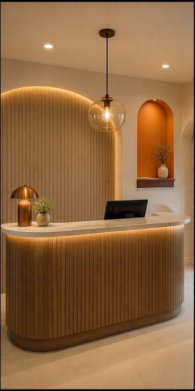
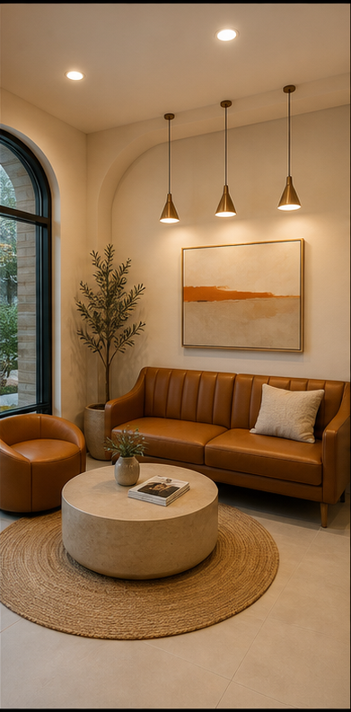
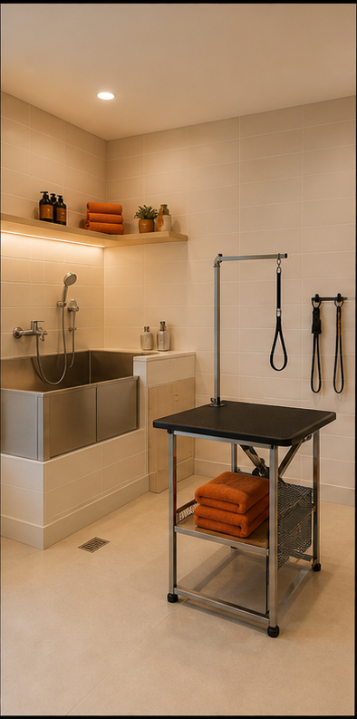
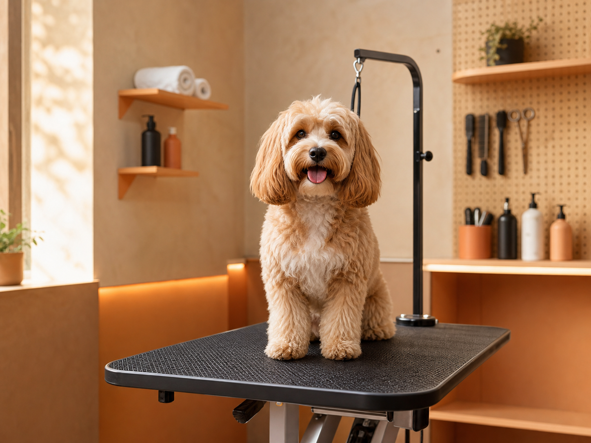
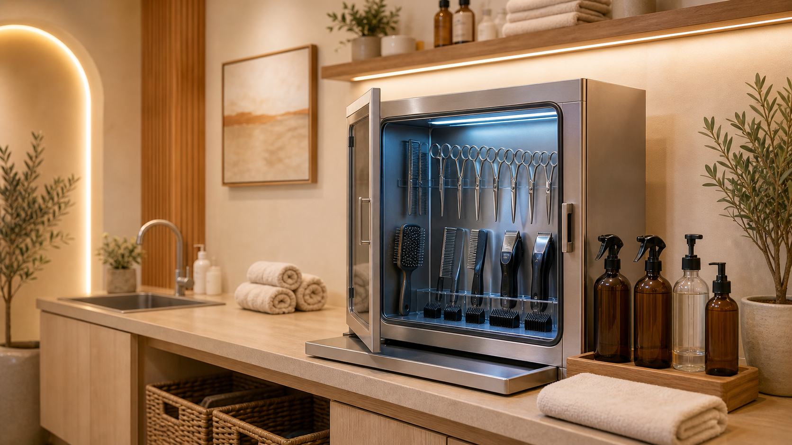

TAIL CLUB CARE
精致洗护服务
选择适合毛孩子的护理方案。
快速预约洗护
选择服务，图片与预约信息会同步更新。
基础洗护
适合日常清洁、定期到店护理。
包含：毛发梳理、基础洗浴、吹干拉毛、耳部与脚底清洁A WARM PLACE
门店一角



到店洗护流程 · 简单 4 步
健康评估
了解毛孩情况专业洗护
温和护理完成交付
安心接回WHY TAIL CLUB
安心理由

TAIL CLUB CARE
猫犬分区
分区护理，减少陌生环境带来的压力。

TAIL CLUB CARE
用品消毒
每次服务前后完成工具与区域消毒。
TAIL CLUB CARE
洗护记录
护理项目、时长与重点都会清晰记录。
TAIL CLUB CARE
异常沟通
发现皮肤、毛发或情绪异常会及时说明。
BOOK A VISIT
为毛孩子留一段
舒服的护理时光
选择服务和时间，其余交给我们。
预约信息已提交
我们会尽快与你确认具体时间。
地图加载中…
FAQ
常见问题
洗护需要多长时间？＋
基础洗护通常约 60 分钟；实际时间会随体型、毛量和护理项目调整。
第一次到店需要准备什么？＋
欢迎提前告诉我们毛孩子的习惯与需求，我们会安排合适的护理方案。
可以指定美容师吗？＋
可以。预约时备注你的偏好，我们会尽量为你安排。